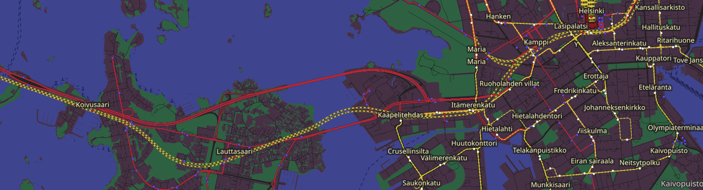
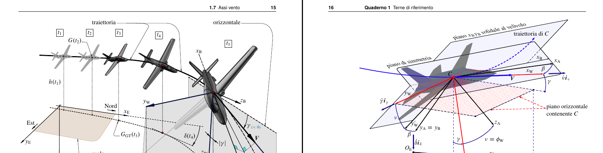

# Skill(s)
## Geospatials

(C) OpenStreetMap Contributors, Transport Tiles courtesy of Andy Alan
As Eganatha, I love making Public Transport features, government proposals, landuses, and much more on OpenStreetMap. I excel at open geodata formats, such as (but not limited to), geojson, gpx, shapefile, osm, and the programs and web services that makes it possible to contribute to OSM, JOSM and Overpass API.
## C Programming Language
C is low level programming language. I end up liking C because I was influenced by the Suckless community, and also because how it provides low access to the memory! After that I start compiling bunch of programs (mostly writen in C) and modifying it as I learn C along the way.
## Markups & typesettings

Elementi di Dinamica e simulazione di volo - Agostino De Marco & Domenico P. Coiro
I used LaTeX for most of my essays and reports, because I can just type whatever I want without bothering about the document styles and stuff. HTML is also used for most of my webpages and acompannied with some stylesheets.
## Semi audiphile
I listen to music as other do, but sometimes the high fidelity ones. High fidelity does not always means high quality, It means the copies of the song should sound as close as it was recoreded on the studio. Don't ask me where I got those high fidelity songs...
# Others
I use Fedora GNU/Linux, dwm as the window manager, st as terminal (on my laptop). I use Arch GNU/Linux, and KDE Plasma (on my computer). Vim and NVIM as my preferred editors.